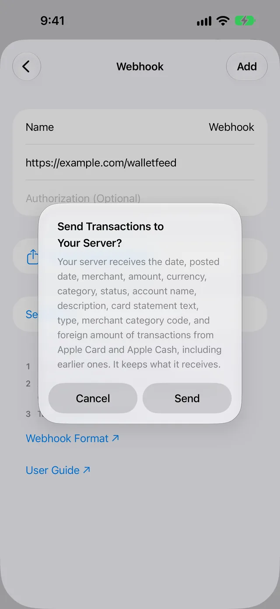

Send Apple Card transactions to a webhook
WalletFeed sends your Apple Card, Apple Cash and Savings transactions from your iPhone to a webhook. A webhook is an https:// URL in n8n or on your server. WalletFeed sends each new or changed transaction to that URL in JSON format. You can also set WalletFeed to send account balances and account details, for example the due date.
Before you start
For this procedure, you must have:
- An iPhone with iOS 26 or a newer version. WalletFeed is available only in the US.
- Apple Card, Apple Cash or Savings in Wallet on that iPhone.
- WalletFeed with WalletFeed Pro. WalletFeed Pro is a subscription with a 1-week free trial, or a one-time Lifetime purchase.
- An n8n workflow, or a server that can receive HTTPS requests. The URL must start with
https://. - A computer for the steps in n8n or on your server.
WalletFeed also sends transactions when your iPhone is not on your home network. Thus, the URL must operate from the internet.
Your URL and secret stay on your iPhone
- WalletFeed keeps the URL, the authorization value and the signing secret in the Keychain on your iPhone. iOS encrypts the Keychain.
- These items do not go to iCloud Keychain or to your other devices.
- WalletFeed has no account, and no WalletFeed server keeps these items. No person at WalletFeed can see or get these items.
- Your iPhone sends the URL and the authorization value only to your server. WalletFeed uses the signing secret to sign each request, but WalletFeed does not send the signing secret.
- When you delete the destination, WalletFeed deletes these items from your iPhone.
Step 1: Get a webhook URL
Do the steps for n8n, or the steps for your server.
Get the URL in n8n
The Webhook node in n8n gives you the URL. With Header Auth, the node also makes sure that each request has the correct Authorization value.
-
On your computer, open n8n.
-
Make a new workflow.
-
Click Add first step….
-
Select On webhook call.
Result: n8n adds a Webhook node to the workflow.
-
In HTTP Method, select POST.
-
In Authentication, select Header Auth.
-
In Credential for Header Auth, select Create new credential.
-
In Name, type
Authorization. -
In Value, type
Bearer, a space and a long password that you make. -
Keep a copy of the header value (the text in Value) for Step 2.
-
Save the credential.
-
In Respond, select Immediately.
-
Select Production URL.
-
Copy the URL that n8n shows.
-
Click Publish.
Result: n8n shows a window with a name for the version.
-
In that window, click Publish.
Result: n8n starts to receive requests at the Production URL.
-
Send the URL and the header value to your iPhone, for example with AirDrop.
You must use the Production URL in WalletFeed. The Test URL operates only for 120 seconds after you click Listen for test event.
If Respond is Immediately, n8n sends the status code when the workflow starts. WalletFeed waits a maximum of 30 seconds for the status code. If an error stops the workflow after n8n sends the status code, WalletFeed does not send the data again.
n8n uses only the version of the workflow that you published. If you change the workflow, you must publish it again.
If requests go to your n8n server through a reverse proxy, n8n gets the Production URL from the environment variable N8N_WEBHOOK_URL. The value of this variable must be your https:// address. Before n8n 2.35.0, the name of this variable was WEBHOOK_URL. From version 2.35.0, if you use WEBHOOK_URL, n8n writes a warning in its log.
Use your server
Your server must do these tasks:
- Accept
POSTrequests with a JSON body at anhttps://URL. - Send a status code from 200 to 299 after the server saves the data.
- Save each event, then send the status code. Use the
idof each event to find an event that the server received before, and do not apply it again. - Use the
data.idof each transaction to find the same transaction in the saved data. - For a
transaction.deletedevent, remove the transaction that has the ID indata.id.
WalletFeed sends a transaction again when the transaction changes. If the server does not send a status code from 200 to 299, WalletFeed keeps the changes and sends them again. If the server sends 410, WalletFeed sets Enabled to off. For more information, refer to New and changed transactions.
Webhook format gives the JSON format and the steps to examine the signature. You get the secret for the signature in Step 2.
Step 2: Add the webhook in WalletFeed
-
On your iPhone, open WalletFeed.
-
Tap Destinations.
-
Tap + at the top of the screen.

-
Tap Webhook, below Developers at the bottom of the list.
Result: WalletFeed shows the Webhook screen. If you do not have WalletFeed Pro, WalletFeed shows WalletFeed Pro first.
-
If WalletFeed shows WalletFeed Pro, get WalletFeed Pro.
-
To give the destination a different name, for example n8n, type the name in Name.

-
Paste the URL in the field that shows
https://example.com/hook.If the URL does not start with
https://, you cannot tap Send Test or Add. -
If you use n8n, paste the header value in Authorization (Optional).
-
If you use your server, and it examines the
Authorizationheader, type the value for that header in Authorization (Optional). -
If the server does not examine the signature (for example, n8n with Header Auth), go to step 14.
-
Tap Share Signing Secret.
Result: iOS shows a menu with Copy. The secret starts with
whsec_. -
Tap Copy.
-
Add the secret to your server.
-
Below Share Signing Secret, set the switches in the two sections. Each switch sends one type of event. For the events, refer to Select the events.
-
Tap Send Test.
Result: If only one switch is on, WalletFeed sends one test event. If more than one switch is on, WalletFeed shows a menu. The menu has one item for each switch that is on, for example New Transaction or Balance. Tap an item to send that test event. The test event has sample data, for example a transaction of $4.20 with the description "WalletFeed test transaction". If the server accepts it, WalletFeed shows a green checkmark.
If the server does not accept it, WalletFeed shows the error below Send Test. In n8n, the Executions tab of the workflow shows the test.
-
Tap Add.
Add does not operate if all switches are off.
Result: WalletFeed shows Send Transactions to Your Server? with a message. If all switches under Transactions are off, the title is Send Account Data to Your Server?. The message tells you the data that your server will receive. The message also gives the Wallet accounts and the start date, or "including earlier ones" if Initial History is All.

If you tap Cancel, WalletFeed removes the new destination and does not send data.
-
Tap Send.
Result: WalletFeed starts to send transactions to the URL.

Select the events
A webhook destination has two sections of switches. Each switch sends one type of event. WalletFeed does not send a type of event if its switch is off.
| Section | Switch | Event type | When you add the destination |
|---|---|---|---|
| Transactions | New | transaction.created |
On |
| Transactions | Changed | transaction.updated |
On |
| Transactions | Removed | transaction.deleted |
On |
| Transactions | History | transaction.backfilled |
On |
| Accounts | Balances | balance.updated |
Off |
| Accounts | Account Details | account.updated |
Off |
| Accounts | Added | account.added |
Off |
| Accounts | Removed | account.removed |
Off |
- To keep a full copy of your transactions, set New, Changed and Removed to on. If one of these switches is off, WalletFeed shows "A full copy needs New, Changed and Removed." below Transactions.
- History sends previous transactions. Refer to Send previous transactions.
- Balances sends the balance of each account. Account Details sends the due date, the minimum payment, the overdue payment, the credit limit and the opening date. Refer to Send account balances and details.
- Added and Removed under Accounts send an event when an account starts or stops to go to the destination.
- One switch does not change a different switch.
To change the switches after you add the destination, tap the destination in Destinations. The two sections are above Filter. If you set all switches to off, WalletFeed sends nothing until you set a switch to on.
Data that the webhook receives
WalletFeed sends each event to the URL in an HTTP POST request with a JSON body. Each request has one event. The body has these items:
idis the ID of the event (evt_and 32 hexadecimal characters). It is the same as thewebhook-idheader.typeis the type of the event, for exampletransaction.created.versionis2.timestampis the date and time when your iPhone made the event.livemodeisfalsefor Send Test and for Sample Data, andtruefor data from Wallet.datais the object of the event.
This is a transaction.created event for a pending charge:
{
"id": "evt_cd0452538e320e8554053afb13548af6",
"type": "transaction.created",
"version": 2,
"timestamp": "2026-11-16T17:41:20.512Z",
"livemode": true,
"data": {
"id": "8B3F0C2E-6D7A-4E8F-9C1B-2A4D5E6F7A8B",
"account_id": "4F1E2D3C-5B6A-4798-8A9B-0C1D2E3F4A5B",
"account_name": "Apple Card",
"account_type": "liability",
"amount": -6.75,
"direction": "debit",
"currency": "USD",
"status": "pending",
"wallet_status": "pending",
"type": "pointOfSale",
"description": "Blue Bottle Coffee",
"original_description": "BLUE BOTTLE COFFEE OAKLAND CA",
"merchant_name": "Blue Bottle Coffee",
"merchant_category_code": "5814",
"category": "dining",
"transacted_at": "2026-11-16T15:02:11Z",
"posted_at": null,
"foreign_amount": null,
"foreign_currency": null,
"exchange_rate": null
}
}
This table shows the fields of each transaction. transaction.created and transaction.updated have one transaction in data. transaction.backfilled has a list of transactions in data.transactions.
| WalletFeed sends | JSON field |
|---|---|
| Transaction ID, which stays the same when the transaction changes | id |
| ID and name of the Wallet account, for example Apple Card | account_id, account_name |
liability for Apple Card, or asset for Apple Cash and Savings |
account_type |
| Amount, with a sign: negative for purchases and fees, positive for refunds, payments and deposits | amount |
debit for a negative amount, or credit for a positive amount or zero |
direction |
Currency code, for example USD |
currency |
pending or posted |
status |
Wallet status: authorized, pending, memo or booked |
wallet_status |
Transaction type from Wallet, for example pointOfSale, refund, billPayment or transfer |
type |
| Description from Wallet | description |
| Description from the card network | original_description |
| Merchant name, if Wallet has it | merchant_name |
| Merchant category code (MCC) as text with four digits, if Wallet has it | merchant_category_code |
WalletFeed category, for example dining or groceries |
category |
| Date and time of the transaction | transacted_at |
| Date and time when the charge posted, if Wallet gives it | posted_at |
| Amount, currency and exchange rate of a purchase in a different currency | foreign_amount, foreign_currency, exchange_rate |
Each field is always in data. If Wallet has no value for a field, the value is null. The dates use the ISO 8601 format and UTC, for example 2026-11-16T15:02:11Z.
A transaction.deleted event has only id (the ID of the transaction to remove), account_id and reason. The other types of event are in Webhook format.
Each request also has the Standard Webhooks headers webhook-id, webhook-timestamp and webhook-signature. It also has a WalletFeed-Event header with the type of the event. The User-Agent header is WalletFeed-Webhooks/2. If you typed a value in Authorization, the request has that value in the Authorization header.
WalletFeed has no account, and no WalletFeed server keeps your transactions or keys. Your iPhone sends the data directly to the URL. The Keychain on your iPhone keeps the URL, the Authorization value and the secret. The server or service that receives the data keeps it. The terms of that service are applicable to the data.
Get one item for each transaction in n8n
The Webhook node puts the JSON in body. Each request has one event, and body.type is the type of the event. To send each type of event to its own steps, do these steps:
- After the Webhook node, add a Switch node.
- For the first rule, in the condition, type
{{ $json.body.type }}, select is equal to, and typetransaction.created. - Add one rule for each other type of event that you use, for example
transaction.updated,transaction.deletedandbalance.updated. - After the output for
transaction.created, add your steps. The transaction is inbody.data. - Click Publish.
- In the window, click Publish.
For transaction.updated, the transaction is also in body.data. For transaction.deleted, the ID of the transaction to remove is in body.data.id.
For transaction.backfilled, the transactions are in body.data.transactions. To get one n8n item for each transaction, add a Split Out node after the output for transaction.backfilled. In Fields To Split Out, type body.data.transactions.
The request from Send Test also starts the workflow. In that request, body.livemode is false.
New and changed transactions
While WalletFeed is open, the webhook receives changes in seconds. When WalletFeed is not open, iOS starts WalletFeed approximately 1 hour or less after a change in Wallet. If Background Sync is on in Settings › Sync, WalletFeed then sends the change.
In Wallet, a new charge is pending until the charge posts. WalletFeed sends the charge as transaction.created with pending in status. When the charge posts, WalletFeed sends the same transaction id again as transaction.updated with posted in status and the posted amount. To keep one item for each transaction, you must change the item that has the same id. If Wallet gives the posted charge a new ID, WalletFeed sends the previous ID in a transaction.deleted event with "reason": "removed", and the new transaction in a transaction.created event.
If Include Pending is off in the filter, WalletFeed sends charges only after they post. Send only some transactions tells you how to set the filter.
A refund is a different transaction. Its amount is positive and its direction is credit.
If Wallet shows a declined or expired charge, WalletFeed sends a transaction.deleted event with "reason": "rejected". If Wallet removes a transaction, the event has "reason": "removed".
Sometimes more than 25 new or changed transactions come in one send, for example after your iPhone was off for a long time. If History is on, WalletFeed sends them as transaction.backfilled events of up to 100 transactions, with "source": "catch_up".
If History is off, WalletFeed sends them as transaction.created and transaction.updated events.
If the server does not send a status code from 200 to 299, WalletFeed keeps the changes:
- For 429 or a status code from 500 to 599, WalletFeed sends the request again a maximum of 3 times, after approximately 1, 2 and 4 seconds. Then it sends the request again the next time that it sends data.
- For 410, WalletFeed sets Enabled to off. The destination shows "Your server answered 410 Gone. Check the URL, then turn on Enabled." For a 410, Send Test shows the error, but it does not set Enabled to off.
- For a different status code, WalletFeed sends the request again the next time that it sends data.
Thus, the server can receive the same data two times or more. An event that WalletFeed sends again with the same data has the same webhook-id. Two different events can have the same data and different IDs. Upsert on the ID of the object, for example data.id of a transaction. The webhook-timestamp header and the signature can change each time that WalletFeed sends the request. The timestamp value in the body can be newer when WalletFeed sends the event again the next time that it sends data.
Send account balances and details
WalletFeed can also send the balance of each account and the details of each account, for example the due date of Apple Card. The four switches under Accounts are off when you add the destination. To set a switch to on, do these steps:
-
Open WalletFeed.
-
Tap Destinations, then tap the webhook destination.
-
Under Accounts, set Balances, Account Details, Added or Removed to on.
Result: For Balances and Account Details, WalletFeed sends the data of all the accounts that the destination sends. The other switches send only the changes that occur after you set them to on.
You can also set these switches to on when you add the destination, before you tap Add.
Balances sends one balance.updated event for each account. Each event has the account_id, account_name, account_type and currency of the account. It also has booked (the balance from the posted transactions) and available (the latest available balance), if Wallet gives them. Each balance has a signed amount, direction (credit or debit) and as_of (the time when Wallet calculated the balance). An Apple Card balance that you owe is negative. Use a balance only if its as_of is the same as or newer than the as_of that you have.
WalletFeed sends the balances again each time that a balance changes, also when there are no new transactions.
Account Details sends one account.updated event for each account when Wallet tells WalletFeed that the account changed. The credit item has limit, minimum_payment, payment_due_date and overdue_amount. To get an alert for a new due date, compare credit.payment_due_date with the due date that you have.
Added sends account.added when an account starts to go to the destination. Removed sends account.removed when an account stops to go to the destination.
Of the filter, only Accounts applies to these events. For all the fields, refer to Webhook format.
Send previous transactions
A new destination also receives previous transactions from the start date in Settings › Sync › Initial History. Initial History is All until you change it. To start from a different date, you must set Initial History before you add the webhook.
To send more previous transactions after you add the webhook, use Send History:
-
In Destinations, tap the webhook destination.
-
Tap Send History.
-
Tap 30 Days, 90 Days, 1 Year or All.
Result: WalletFeed shows Sending History and a progress bar.
History under Transactions must be on. WalletFeed sends previous transactions as transaction.backfilled events with "source": "history", and it sends the newest transactions first. It sends them in groups of approximately 500 and waits 1 second between groups. Each event contains a maximum of 100 transactions in data.transactions. The last event of a history has "has_more": false. n8n starts the workflow one time for each event.
If History is off, WalletFeed sends no previous transactions. Send History shows only when History is on. After you send the history, WalletFeed also sends the balances and account details again, if Balances or Account Details is on.
To stop Send History, do these steps:
- In the destination, tap Send History.
- Tap Stop Sending.
Change or remove the destination
Send only some transactions
- In Destinations, tap the webhook destination.
- Set Filter to on.
- Set the filter controls (refer to the table).
| Control | WalletFeed sends |
|---|---|
| Include | All transactions, only purchases or only credits |
| Minimum | Only transactions of this amount or more |
| Include Pending | If it is off, charges only after they post |
| Accounts | Only transactions from the Wallet accounts that you select |
| Categories | Only transactions in the categories that you select |
| Exclude | No transactions from the merchants that you type (with a comma between two merchants) |
If Apple Intelligence is active, you can also type a rule, for example "Travel over $50, not Uber". When you tap the Apple Intelligence icon at the end of the field, WalletFeed makes the filter from the rule. For more information about the filter, refer to Choose what to send.
WalletFeed uses the filter only for the transactions that it sends after you set the filter.
Change the URL
-
In Destinations, tap the webhook destination.
-
Tap URL.
Result: WalletFeed shows Webhook URL with the URL that the destination uses.
-
Delete the URL in the field.
-
Paste the new URL.
If the URL does not start with
https://, you cannot tap Save. -
Tap Save.
Result: WalletFeed starts to send changes to the new URL.
The URL row shows only the server name from the URL. WalletFeed does not send the previous transactions to the new URL. You can send them with Send History.
Change the Authorization value
- In Destinations, tap the webhook destination.
- Tap Authorization.
- Delete the value in the field.
- Type or paste the new value.
- Tap Save.
If the field is empty when you tap Save, the destination has no value, and Authorization shows None.
You can get the secret again with Share Signing Secret in the destination. The destination always uses the same secret.
Stop or delete the destination
To stop the destination for a time, set Enabled to off in the destination.
To delete the destination, do these steps:
- In Destinations, tap the webhook destination.
- Tap Delete.
- Tap Delete again.
The transactions that WalletFeed sent stay on your server or in n8n.
To stop the n8n workflow, do these steps in n8n:
- Open the menu adjacent to Publish.
- Select Unpublish.
If there is a problem
If you cannot tap Send Test or Add
Send Test and Add operate only if the URL starts with https:// and has a server name. For Add, a name is also necessary.
- Make sure that the URL starts with
https://and has a server name after it. - Make sure that Name is not empty.
If WalletFeed shows "Rejected (HTTP 404)"
The server has no webhook at the URL. For example, the URL is the n8n Test URL, you did not publish the workflow, or HTTP Method is not POST. For this problem, Send Test on the Webhook screen shows "The server returned an error (HTTP 404)."
- In the n8n Webhook node, make sure that HTTP Method is POST.
- Make sure that you published the workflow after your last change.
- In the Webhook node, select Production URL.
- Copy the URL again.
- In WalletFeed, do the steps in Change the URL.
- In the destination, tap Send Test.
- If WalletFeed shows "Rejected (HTTP 404). Check the destination, then try again." below Sending History, tap Try Again.
If the HTTP code is not 404, the server did not accept the request because of a different problem. To find the problem, examine the log of your server, or the Executions tab in n8n.
If the destination shows "Your server answered 410 Gone. Check the URL, then turn on Enabled."
The server sent the status code 410 (Gone), and WalletFeed set Enabled to off.
- Make sure that the server has a webhook at the URL. In n8n, make sure that you published the workflow.
- If the URL changed, do the steps in Change the URL.
- In the destination, tap Send Test.
- Set Enabled to on.
If the destination shows "Authentication failed"
The server did not accept the Authorization value (HTTP 401 or 403). In n8n, this problem occurs if the value is different from Value in the Header Auth credential.
-
In Destinations, tap the destination.

-
Tap Authorization.
-
Delete the value in the field.
-
Type the header value from Value in n8n.
-
Tap Save.
-
If WalletFeed shows "Authentication failed. Check the connection." below Sending History, tap Try Again.
If the destination shows "Can't connect"
Your iPhone cannot connect to the URL, or the server did not send a status code in 30 seconds. For example, the server is off, or the URL operates only on your home network.
-
Make sure that your server or n8n is on.
-
On your iPhone, set Wi-Fi to off.
-
In the destination, tap Send Test.
If WalletFeed shows an error, the URL operates only on your home network. You must use a URL that operates from the internet.
-
Set Wi-Fi to on again.
-
In n8n, make sure that Respond is Immediately.
WalletFeed sends the changes again each time that it sends data, until the server accepts them.
If the destination shows "Server error"
The server sent a status code of 500 or more. The destination shows the code, for example "Server error (500)". WalletFeed sends the same changes again each time that it sends data, until the server accepts them.
- Examine the log of your server, or the Executions tab of the workflow in n8n.
- Correct the error.
- In the destination, tap Send Test.
If the server receives a transaction two times
WalletFeed sends a transaction again when the transaction changes, for example when a pending charge posts. WalletFeed also sends a request again if it did not get a status code from 200 to 299.
- Find the item that has the
idof the transaction (data.id). - Change that item. Do not add a new item.
- To find an event that the server received two times, compare the
webhook-idheaders.
If the webhook does not receive new transactions
Something stops the transactions to the URL. For example, the destination is off, or Background Sync is off. After your iPhone starts again, WalletFeed cannot send data to destinations until you type your passcode one time.
- Open WalletFeed. While WalletFeed is open, it sends changes in seconds.
- If Destinations shows Sync Requires Pro, tap Upgrade.
- If the destination shows Off, set Enabled to on in the destination.
- Make sure that the switch for the event is on. If Filter is on, make sure that the filter includes the transaction.
- In n8n, make sure that you published the workflow.
- In WalletFeed, tap Settings (the gear button) at the top of Destinations.
- Make sure that Background Sync is on.
- Tap Sync Now.
To make sure that WalletFeed can send data to the URL, tap Send Test in the destination. If more than one switch is on, select an event in the menu. If the server accepts the test event, WalletFeed shows a green checkmark.

Related
Updated November 16, 2026